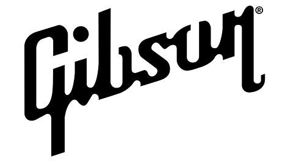
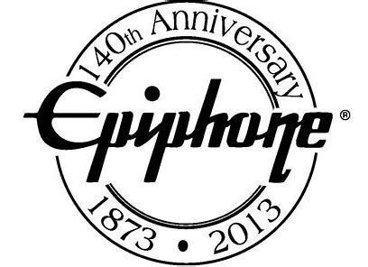
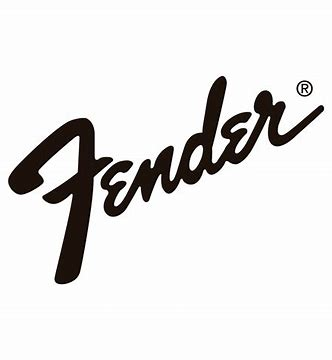
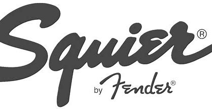

様々な種類があるギターですが、ファッションのようにブランドがあります。
ここでは代表的なギターのブランドをいくつか紹介します。
ギターのブランド
Gibson
世界でもっとも有名なブランドのひとつ。代表的なモデルはレスポールやSG、フライングVなど。
Epiphone
Gibson傘下のメーカー。比較的安価で、レスポールなどのエントリーモデルを生産している。
Fender
Gibsonと並ぶ、もっとも有名なブランドのひとつ。代表的なモデルはテレキャスターやストラトキャスター、ジャズマスターなど。
Squier
Fender傘下のブランドで、テレキャスターやストラトキャスターなどのエントリーモデルを発売している。
YAMAHA
世界最大の総合楽器メーカーで、幅広い分野の製品を発売している。コストパフォーマンスが非常に高い。
Bacchus
コストパフォーマンスが高いことで人気なブランドで、ストラトキャスターのほかにも様々なモデルを発売している。